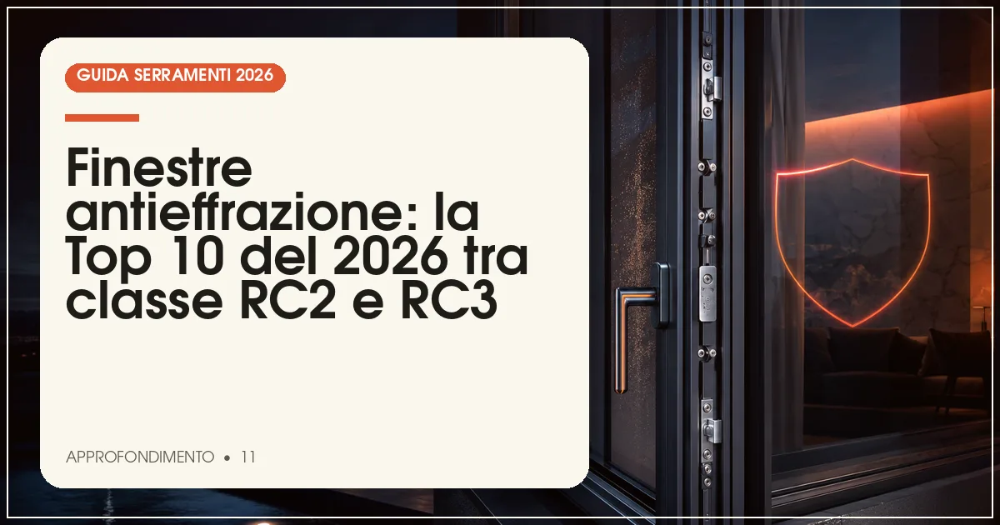

La migliore finestra antieffrazione del 2026 è Internorm KF 520 in classe RC3: profilo rinforzato, vetro stratificato P4A/P5A e ferramenta con riscontri antiscasso di serie. Alternative eccellenti in classe RC3 sono Finstral e Schüco. Prezzi: sovrapprezzo indicativo del 15-30% rispetto alla versione standard.
In sintesi
- La norma UNI EN 1627 classifica la resistenza allo scasso da RC1 a RC6: per l'abitativo servono RC2 o RC3.
- RC2 resiste all'attrezzo semplice (cacciavite, tenaglia) per almeno 3 minuti; RC3 anche al piede di porco per 5 minuti.
- Il vetro stratificato antinfortunio-antieffrazione (P4A, meglio P5A) è indispensabile quanto la ferramenta.
- Il sovrapprezzo per la classe RC2 è indicativamente del 10-20%, per RC3 del 20-35%.
- La posa con fissaggi idonei al muro è decisiva: una finestra RC3 ancorata male perde la certificazione.
I dati più recenti sulla criminalità abitativa confermano un dato noto ai serramentisti: nella maggior parte dei furti in appartamento i ladri entrano dalla finestra o dalla portafinestra, soprattutto ai piani bassi, e impiegano meno di tre minuti. Una finestra standard si apre con un cacciavite in poche decine di secondi; una finestra certificata RC3 resiste al piede di porco per almeno cinque minuti: il tempo che trasforma un furto facile in un tentativo abbandonato.
Il riferimento tecnico è la norma UNI EN 1627, che classifica la resistenza antieffrazione di finestre e porte in classi da RC1 a RC6 (in precedenza WK). La classe si certifica sull'intero sistema — profilo, vetro, ferramenta — testato in laboratorio secondo le procedure UNI EN 1628-1630: per questo non basta montare un vetro stratificato su una finestra qualsiasi per dichiararla antieffrazione.
Per questa Top 10 abbiamo selezionato i sistemi con certificazione di classe RC2 o RC3 disponibili sul mercato italiano, valutando dotazione di serie (vetro, numero di riscontri, maniglia con chiave), ampiezza di gamma e prezzo. Per la porta d'ingresso, il ragionamento è analogo ma più spinto: ne parliamo nella Top 10 delle porte blindate 2026.
La classifica: le 10 finestre antieffrazione del 2026
Internorm KF 520 RC3 — la sicurezza senza compromessi
Il sistema di punta austriaco è disponibile in classe RC3 con pacchetto completo: profilo a 6 camere con rinforzi maggiorati, vetro stratificato P4A/P5A con canalino rinforzato, ferramenta a fungo con riscontri antiscasso su tutto il perimetro e maniglia bloccabile. La tecnologia I-tec con vetro fissato a filo anta elimina uno dei punti deboli classici, l'estrazione della lastra dall'esterno.
Prezzi indicativi 700-1.100 €/m² in configurazione RC3. È la scelta di riferimento per ville isolate e piani terra esposti, dove si vuole la massima resistenza senza rinunciare a Uw 0,62 W/m²K.
- RC3 completo di serie nel pacchetto sicurezza
- Vetro fissato I-tec anti-estrazione
- Isolamento termico da riferimento
- Prezzo nella fascia più alta
- Consegne più lunghe della media
Finstral FIN-Project RC3 — sicurezza di filiera
L'altoatesina offre i sistemi FIN-Project e FIN-Vista in classe RC3 con vetro stratificato prodotto internamente, ferramenta a scomparsa con riscontri antiscasso e la possibilità di sensori di apertura integrati nel telaio per l'allarme: un dettaglio che semplifica l'installazione dell'impianto di sicurezza domestico.
Prezzi indicativi 600-950 €/m² in RC3. La rete di showroom diretti garantisce supporto anche nella verifica della configurazione più adatta a ogni apertura della casa.
- Vetro stratificato prodotto in casa
- Sensori allarme integrabili nel telaio
- Ferramenta a scomparsa antiscasso
- Configurazione RC3 non su tutte le serie
- Listino variabile tra showroom
Schüco LivIng e AWS — RC3 con ingegneria certificata
Schüco propone sia il PVC (LivIng) sia l'alluminio (AWS) in classe RC3, con un catalogo di componenti antieffrazione tra i più completi: riscontri a fungo, cerniere rinforzate, vetro stratificato con pellicola PVB da 1,52 mm e test di sistema documentati per ogni combinazione. La tenuta meccanica del profilo è tra le migliori testate.
Prezzi indicativi 550-1.000 €/m² in RC3 tramite partner certificati. Per progetti che abbinano finestre e grandi scorrevoli protetti, è l'ecosistema più coerente.
- RC3 su PVC e alluminio con stessa logica
- Componenti antieffrazione di catalogo esteso
- Test documentati per combinazione
- Prezzo premium
- Qualità finale legata al partner
Oknoplast RC2 — la sicurezza accessibile a tutti
Il gruppo polacco offre quasi tutta la gamma in classe RC2 già nella configurazione intermedia: vetro stratificato 33.1 o P4A, almeno due riscontri antiscasso per lato e maniglia con chiave. Per un appartamento dal secondo piano in su, dove la minaccia tipica è lo scasso con attrezzi semplici, RC2 è il livello corretto e qui costa poco: sovrapprezzo indicativo del 10-15%.
Prezzi in RC2: 450-750 €/m² indicativi. La capillarità della rete rende facile ottenere il certificato di classe e assistenza locale.
- RC2 a sovrapprezzo contenuto
- Vetro stratificato su gran parte della gamma
- Rete capillare in Italia
- RC3 solo su alcune serie
- Vetro P4A spesso optional
Veka Softline 82 RC2/RC3 — il profilo tedesco in versione blindata
Il sistema a 7 camere di Veka, grazie alla profondità di 82 mm e ai rinforzi in acciaio da 1,5-2 mm, accetta configurazioni certificate RC2 e RC3 con ferramenta antieffrazione a fungo e vetro fino a P5A. La profondità del profilo dà alla ferramenta una base meccanica superiore alla media del PVC.
Prezzi indicativi 450-800 €/m² a seconda della classe. Come sempre con i sistemi a profilo, la qualità finale dipende dal serramentista trasformatore: chiedete il verbale di certificazione del sistema.
- Profondo 82 mm: base solida per la ferramenta
- Certificabile RC2 e RC3
- Prezzo competitivo
- Certificazione da verificare con il trasformatore
- Qualità di assemblaggio variabile
Metra NC 75 — l'alluminio italiano in classe RC3
Il sistema a taglio termico veneto è disponibile in RC3 con ferramenta antiscasso a più punti e vetro stratificato: l'alluminio offre una rigidità intrinseca che aiuta la resistenza allo scasso, soprattutto sulle ante di grandi dimensioni. Prezzi indicativi 600-1.000 €/m² in configurazione antieffrazione, con finiture che restano tra le più curate del segmento.
Aluprof MB-86 — RC3 per grandi superfici
Il sistema polacco in alluminio è certificato fino a RC3 e regge ante di grandi dimensioni senza perdere rigidità: è tra i preferiti per le ampie portefinestre dei piani terra, dove la superficie vetrata è il punto critico. Con vetro P4A e ferramenta multipunto, i prezzi indicativi sono 650-1.100 €/m².
Reynaers MasterLine 8 — design minimale, sicurezza massima
Anche con profili a vista ridottissimi, il sistema belga raggiunge la classe RC3 con pacchetti dedicati: la prova che estetica minimale e antieffrazione possono convivere. È la scelta tipica delle ville di pregio con grandi vetrate a rischio. Prezzi nella fascia alta: 750-1.300 €/m² in RC3.
Ponzio PE78N — RC2 affidabile e ben distribuito
Lo storico marchio piemontese offre la classe RC2 sul sistema da 78 mm con ferramenta a fungo e vetro stratificato: una soluzione equilibrata per appartamenti e uffici, con prezzi indicativi di 500-800 €/m² e una buona rete di serramentisti nel Centro-Nord. Disponibile RC3 su richiesta per configurazioni specifiche.
Drutex Iglo Energy RC2 — la protezione a basso costo
Chiude la classifica il sistema polacco, che porta la classe RC2 nella fascia economica: vetro stratificato e riscontri antiscasso con sovrapprezzo contenuto, per un totale indicativo di 350-600 €/m². Soluzione interessante per seconde case e immobili a reddito, dove il budget è vincolante ma il piano terra richiede protezione.
Tabella comparativa: classe antieffrazione, vetro e prezzi
| Sistema | Classe max | Vetro antieffrazione | Prezzo indicativo (€/m²) | Ideale per |
|---|---|---|---|---|
| Internorm KF 520 | RC3 | P4A/P5A, fissato I-tec | 700–1.100 | Ville isolate, piano terra |
| Finstral FIN-Project | RC3 | Stratificato di filiera | 600–950 | Chi vuole sensori integrati |
| Schüco LivIng/AWS | RC3 | Stratificato PVB 1,52 | 550–1.000 | Progetti con scorrevoli |
| Oknoplast | RC2 (RC3 su serie top) | 33.1 / P4A | 450–750 | Appartamenti ai piani alti |
| Veka Softline 82 | RC3 | Fino a P5A | 450–800 | Rapporto prezzo/protezione |
| Metra NC 75 | RC3 | Stratificato | 600–1.000 | Grandi ante in alluminio |
| Aluprof MB-86 | RC3 | P4A | 650–1.100 | Portefinestre ampie |
| Reynaers MasterLine 8 | RC3 | Stratificato | 750–1.300 | Ville di design |
| Ponzio PE78N | RC2 | Stratificato | 500–800 | Appartamenti e uffici |
| Drutex Iglo Energy | RC2 | Stratificato | 350–600 | Budget contenuti |
Nota metodologica: la classe indicata è quella massima certificata sul sistema secondo UNI EN 1627; la configurazione specifica (vetro, ferramenta, numero riscontri) va confermata in fase d'ordine. Prezzi indicativi rilevati a luglio 2026, posa esclusa.
Cosa dice la norma UNI EN 1627: le classi RC spiegate
Da RC1 a RC6: la scala della resistenza
La norma UNI EN 1627 classifica la resistenza allo scasso in sei classi. RC1 offre solo protezione di base; RC2 resiste almeno 3 minuti ad attrezzi semplici come cacciaviti e tenaglie; RC3 aggiunge il piede di porco, per almeno 5 minuti; RC4 arriva a 10 minuti con attrezzi da taglio e trapano; RC5-RC6 riguardano banche e siti sensibili.
Quale classe scegliere per casa tua
Per appartamenti dal secondo piano in su, RC2 è il livello corretto. Per piano terra, seminterrati, case isolate e seconde case lasciate vuote a lungo, RC3 è lo standard consigliato. Oltre RC3, in ambito residenziale, ha più senso investire in allarme e videosorveglianza.
La certificazione riguarda il sistema, non il solo vetro
Un errore frequente è credere che basti un vetro stratificato: la classe RC si certifica sull'intera finestra testata in laboratorio secondo UNI EN 1628-1630 (carichi statici, dinamici e attacco manuale). Pretendete il certificato di classe del sistema, non la scheda del singolo componente.
Vetro, ferramenta e posa: i tre anelli della catena antieffrazione
Il vetro stratificato giusto
Per RC2 il minimo è uno stratificato 33.1 o, meglio, un P4A (due lastre con quattro pellicole PVB); per RC3 si consiglia P5A. Il vetro stratificato non impedisce la rottura ma trattiene i frammenti: per fare un varco servono decine di colpi e molto rumore, il vero deterrente. Su portefinestre e superfici a contatto con il pavimento il P4A è comunque obbligatorio per la norma antinfortunistica UNI 7697.
Ferramenta e riscontri antiscasso
La ferramenta antieffrazione usa perni a fungo che si impegnano in riscontri metallici: più punti di chiusura ci sono, più lo scardinamento è difficile. In RC2 servono almeno 2-4 punti antiscasso per anta; in RC3 i punti aumentano e si aggiungono cerniere rinforzate e maniglia con chiave o pulsante.
La posa che non vanifica la certificazione
Anche una finestra RC3 ancorata con semplici schiume può essere divelta dal muro. La posa antieffrazione richiede fissaggi meccanici ravvicinati e controtelaio ancorato alla muratura, come previsto dalla posa qualificata UNI 11673. Per schermature aggiuntive, valutate anche i migliori produttori di persiane e scuri in alluminio.
Domande frequenti sulle finestre antieffrazione
Qual è la migliore finestra antieffrazione del 2026?
Secondo la classifica Infissi Media 2026, la migliore finestra antieffrazione è Internorm KF 520 in classe RC3: profilo rinforzato, vetro stratificato P4A/P5A fissato con tecnologia I-tec e ferramenta antiscasso perimetrale. Ottime alternative in RC3 sono Finstral FIN-Project e Schüco LivIng/AWS.
Cosa significa classe RC2 e RC3 nelle finestre?
Le classi RC (Resistance Class) della norma UNI EN 1627 misurano la resistenza allo scasso. RC2 resiste almeno 3 minuti a un ladro occasionale con attrezzi semplici come cacciavite e tenaglia; RC3 resiste almeno 5 minuti anche all'uso del piede di porco. Per il residenziale le classi consigliate sono RC2 (piani alti) e RC3 (piano terra e case isolate).
Basta il vetro antieffrazione per rendere sicura una finestra?
No: la classe antieffrazione si certifica sull'intero sistema — profilo, ferramenta e vetro — secondo le prove UNI EN 1628-1630. Un vetro stratificato P4A montato su una finestra con ferramenta standard non rende il serramento certificato RC2. Serve il certificato di classe del sistema completo, rilasciato dal produttore.
Quanto costa in più una finestra antieffrazione?
Indicativamente, la classe RC2 aggiunge il 10-20% al prezzo della finestra standard, la classe RC3 il 20-35%. Su una finestra a due ante da 450-600 euro in versione base, significa un sovrapprezzo di circa 60-200 euro: un investimento modesto rispetto al danno medio di un furto in abitazione.